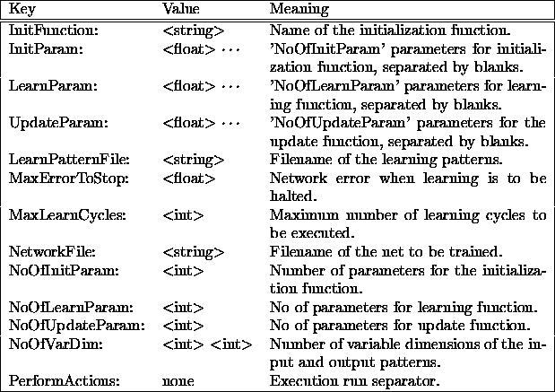
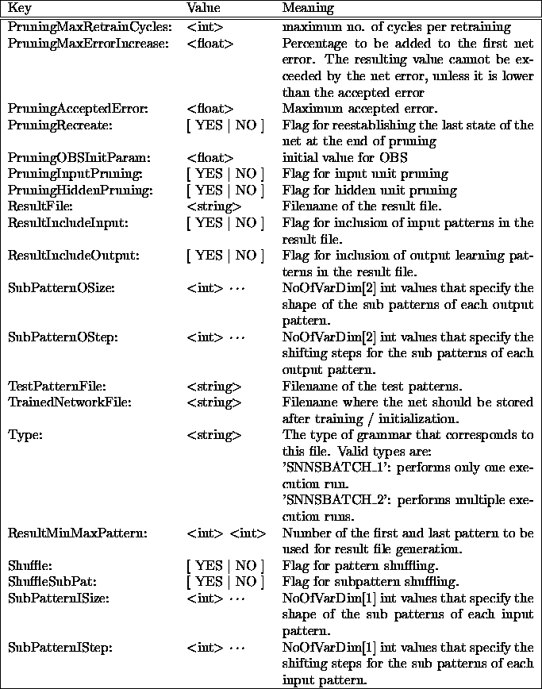

The batch mode execution of SNNS is controlled by the configuration file. It contains entries that define the network and parameters required for program execution. These entries are tuples (mostly pairs) of a keyword followed by one or more values. There is only one tuple allowed per line, but lines may be separated by an arbitrary number of comment lines. Comments start with the number sign '#'. The set of given tuples specify the actions performed by SNNS in one execution run. An arbitrary number of execution runs can be defined in one configuration file, by separating the tuple sets with the keyword 'PerformActions:'. Within a tuple set, the tuples may be listed in any order. If a tuple is listed several times, values that are already read are overwritten. The only exception is the key 'Type:', which has to be listed only once and as the first key. If a key is omitted, the corresponding value(s) are assigned a default.
Here is a listing of the tuples and their meaning:
Please note the mandatory colon after each key and the upper case of several letters.
snnsbat may also be used to perform only parts of a regular network training run. If the network is not to be initialized, training is not to be performed, or no result file is to be computed, the corresponding entries in the configuration file can be omitted.
For all keywords the string '<OLD>' is also a valid value. If <OLD> is specified, the value of the previous execution run is kept. For the keys 'NetworkFile:' and 'LearnPatternFile:' this means, that the corresponding files are not read in again. The network (patterns) already in memory are used instead, thereby saving considerable execution time. This allows for a continuous logging of network performance. The user may, for example, load a network and pattern file, train the network for 100 cycles, create a result file, train another 100 cycles, create a second result file, and so forth. Since the error made by the current network in classifying the patterns is reported in the result file, the series of result files document the improvement of the network performance.
The following table shows the behavior of the program caused by omitted entries:


Here is a typical example of a configuration file:
#
Type: SNNSBATCH_2
#
# If a key is given twice, the second appearance is taken.
# Keys that are not required for a special run may be omitted.
# If a key is omitted but required, a default value is assumed.
# The lines may be separated with comments.
#
# Please note the mandatory file type specification at the beginning and
# the colon following the key.
#
#######################################################################
NetworkFile: /home/SNNSv4.1/examples/letters.net
#
InitFunction: Randomize_Weights
NoOfInitParam: 2
InitParam: -1.0 1.0
#
LearnPatternFile: /home/SNNSv4.1/examples/letters.pat
NoOfVarDim: 2 1
SubPatternISize: 5 5
SubPatternOSize: 26
SubPatternIStep: 5 1
SubPatternOStep: 1
NoOfLearnParam: 2
LearnParam: 0.8 0.3
MaxLearnCycles: 100
MaxErrorToStop: 1
Shuffle: YES
#
TrainedNetworkFile: trained_letters.net
ResultFile: letters1.res
ResultMinMaxPattern: 1 26
ResultIncludeInput: NO
ResultIncludeOutput: YES
#
#This execution run loads a network and pattern file with variable
#pattern format, initializes the network, trains it for 100 cycles
#(or stops, if then error is less than 0.01), and finally computes
#the result file letters1.
PerformActions:
#
NetworkFile: <OLD>
#
LearnPatternFile: <OLD>
NoOfLearnParam: <OLD>
LearnParam: <OLD>
MaxLearnCycles: 100
MaxErrorToStop: 1
Shuffle: YES
#
ResultFile: letters2.res
ResultMinMaxPattern: <OLD>
ResultIncludeInput: <OLD>
ResultIncludeOutput: <OLD>
#
#This execution run continues the training of the already loaded file
#for another 100 cycles before creating a second result file.
#
PerformActions:
#
NetworkFile: <OLD>
#
LearnPatternFile: <OLD>
NoOfLearnParam: <OLD>
LearnParam: 0.2 0.3
MaxLearnCycles: 100
MaxErrorToStop: 0.01
Shuffle: YES
#
ResultFile: letters3.res
ResultMinMaxPattern: <OLD>
ResultIncludeInput: <OLD>
ResultIncludeOutput: <OLD>
TrainedNetworkFile: trained_letters.net
#
#This execution run concludes the training of the already loaded file.
#After another 100 cycles of training with changed learning
#parameters the final network is saved to a file and a third result
#file is created.
#
The file <log_file> collects the SNNS kernel messages and
contains statistics about running time and speed of the program.
An example protocol file is listed in appendix  .
.
If the <log_file> command line parameter is omitted, snnsbat opens the file `snnsbat.log' in the current directory. To limit the size of this file, a maximum of 100 learning cycles are logged. This means, that for 1000 learning cycles a message will be written to the file every 10 cycles.
If the time required for network training exceeds 30 minutes of CPU time, the network is saved. The log file then shows the message:
##### Temporary network file 'SNNS_Aaaa00457' created. #####
Temporay networks always start with the string `SNNS_'. After 30 more minutes of CPU time, snnsbat creates a second security copy. Upon normal termination of the program, these copies are deleted from the current directory. The log file then shows the message:
##### Temporary network file 'SNNS_Aaaa00457' removed. #####
In an emergency (powerdown, kill, alarm, etc.), the current network is saved by the program. The log file, resp. the mailbox, will later show an entry like:
Signal 15 caught, SNNS V4.1 Batchlearning terminated.SNNS V4.1 Batchlearning terminated at Tue Mar 23 08:49:04 1995
System: SunOS Node: matisse Machine: sun4m
Networkfile './SNNS_BAAa02686' saved.
Logfile 'snnsbat.log' written.